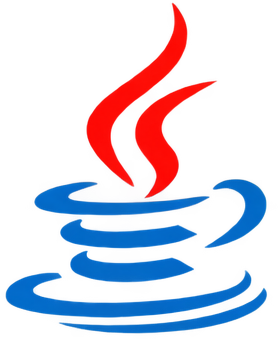
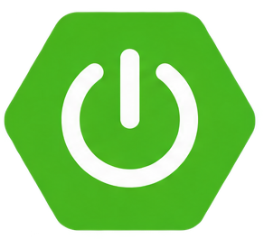

Java
Spring Boot SQL PostgreSQL MySQL HTML CSS JavaScript Git / GitHubSobre mim
Desenvolvimento
com propósito.
Sou apaixonado por tecnologia, sempre em busca de aprender e evoluir. Estou finalizando Análise e Desenvolvimento de Sistemas e tenho foco em entregar soluções de qualidade, unindo lógica, criatividade e boas práticas de desenvolvimento.
Código limpo
e organizado
e organizado
Soluções eficientes
e escaláveis
e escaláveis
Compromisso
com o seu projeto
com o seu projeto
Vamos conversar?
Estou aberto para novos projetos, parcerias e oportunidades.